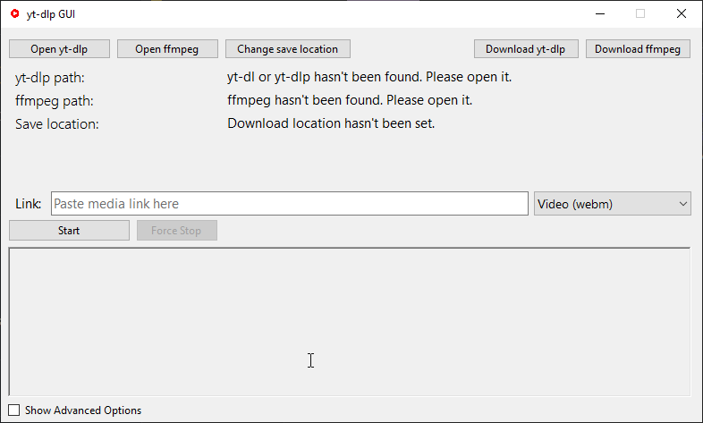

Screenshots

yt-dlp UI is a simple GUI wrapper for yt-dlp.
Main purpose of this project is to build a simple C# WinForms program, while also including some functionality that I could use on an everyday basis.
This project is in no way affiliated with yt-dlp nor FFmpeg.